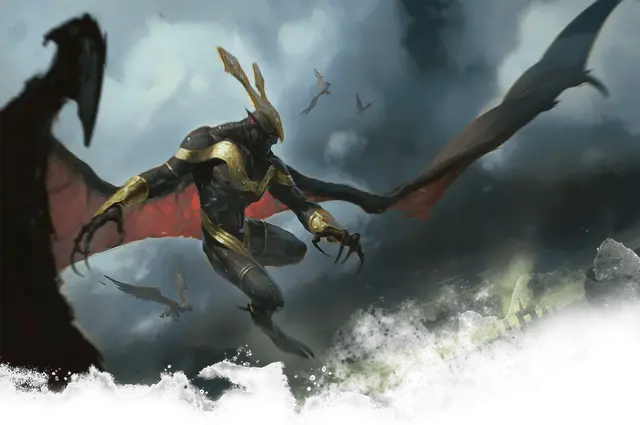

Гнусный владыка
Abhorrent Overlord
Большое Исчадие, законно-злое

Класс Доспеха 16 (природный доспех)
Хиты 136 (16к10 + 48)
Скорость 30 футов, летая 60 футов
| мод | спас | ||
|---|---|---|---|
| СИЛ | 20 | +5 | +5 |
| ЛОВ | 18 | +4 | +4 |
| ТЕЛ | 16 | +3 | +7 |
| мод | спас | ||
|---|---|---|---|
| ИНТ | 15 | +2 | +2 |
| МДР | 14 | +2 | +2 |
| ХАР | 16 | +3 | +7 |
Навыки Запугивание +7, Обман +7, Убеждение +7
Сопротивление урону некротическая энергия, холод
Иммунитет к урону яд
Иммунитет к состояниям отравление
Чувства тёмное зрение 120 футов, пассивное Восприятие 12
Языки Общий, Бездны, Инфернальный
Опасность 9 (5000 опыта)
Бонус мастерства +4
Особенности
Врождённое колдовство. Базовой характеристикой владыки является Харизма (Сл спасброска от заклинания 15). Он может накладывать следующие заклинания, не нуждаясь в материальных компонентах:
• 1/день каждое: смятение [confusion], корона безумия [crown of madness], внушение [suggestion].
Сопротивление магии. Владыка совершает с преимуществом спасброски от заклинаний и прочих магических эффектов.
Ненасытная жадность. Гнусный владыка может ощущать присутствие золота в пределах 1000 футов от себя. Он может определить, в каком месте находится наибольшее количество золота, и может определить направление к этому месту. Если золото перемещается, он знает направление движения. Он не может обнаружить золото, если любая толщина глины или свинца, даже тонкого листа, блокирует прямой путь между ним и золотом.
Действия
Мультиатака. Гнусный владыка совершает две атаки своими когтями.
Когти. Рукопашная атака оружием: +9 к попаданию, досягаемость 5 футов, одна цель. Попадание: 14 (2к8 + 5) рубящего урона плюс 14 (4к6) урона некротической энергией. Гнусный владыка восстанавливает количество хитов, равное половине нанесенного урона некротической энергией, если целью является существо.
Шквал воронов (Перезарядка 6). Гнусный владыка вызывает рой призрачных ворон и гарпий в сфере радиусом 20 футов с центром в точке, которую владыка может видеть в пределах 120 футов от себя. Сфера существует в течение 1 минуты или до тех пор, пока владыка не потеряет концентрацию (как будто концентрируется на заклинании), и ее область считается слабо заслонённой и труднопроходимой местностью.
Любое существо, впервые за ход входящее в область сферы или начинающее в ней свой ход, должно совершить спасбросок Телосложения Сл 15. Существо получает 16 (3к10) рубящего урона плюс 16 (3к10) урона психической энергией при провале или половину этого урона при успехе.
Описание
Гнусные владыки- это тощие двуногие существа, чья серая жёсткая кожа резко контрастирует со сверкающими украшениями из золота Подземного мира, которыми они себя украшают. Их жажду боли и смерти затмевает только их жадность; эти исчадия наслаждаются поиском сокровищ и уничтожением всех, кто стоит на их пути.
Падшие приспешники. Гарпии, стервятники, вороны и другие летающие падальщики привлечены присутствием владыки, привлечены его злом и обещанием теплого мяса. Гнусный владыка не испытывает чувства лояльности или товарищества по отношению к этим подхалимам и часто пожирает членов своей свиты, но большинство из них таких же продолжают собираться вокруг демона, предлагая верность и ссорясь из-за объедков.
Демоны Тероса
Некоторые мерзкие души не могут расстаться с той жалкой жизнью, которая у них была. Будучи презренными при жизни, эти духи быстрее умирают. Худшие из этих ненавистных мертвецов, пережив века горечи, постепенно превращаются в демонов, мучителей Подземного царства. Жители Тероса знают этих исчадий как демонов.
Бессмертная природа. Демонам Тероса не нужны еда, питье или сон.